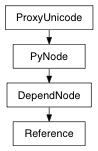

class counterpart of mel function reference
Returns the namespace associated with this reference.
| Parameters: |
|
|---|---|
| Return type: | unicode |
Derived from api method maya.OpenMaya.MFnReference.associatedNamespace
Returns true if the specified node is from this reference or one of its child references. The containsNodeExactly method can be used to test membership without including the child references.
| Parameters: |
|
|---|---|
| Return type: | bool |
Derived from api method maya.OpenMaya.MFnReference.containsNode
Returns true if the specified node is from this reference. Membership in child references is not checked. The containsNode method may be used to test membership in a reference and its child references.
| Parameters: |
|
|---|---|
| Return type: | bool |
Derived from api method maya.OpenMaya.MFnReference.containsNodeExactly
Returns the name of file associated with this reference.
| Parameters: |
|
|---|---|
| Return type: | unicode |
Derived from api method maya.OpenMaya.MFnReference.fileName
Returns true if the reference is an export edits file. An export edits file is a file of type ”.editMA” or ”.editMB” which was created using Maya’s offline file functionality.
| Return type: | bool |
|---|
Derived from api method maya.OpenMaya.MFnReference.isExportEditsFile
Returns true if the reference is loaded.
| Return type: | bool |
|---|
Derived from api method maya.OpenMaya.MFnReference.isLoaded
Returns an array of the nodes associated with this reference.
| Return type: | PyNode list |
|---|
Derived from api method maya.OpenMaya.MFnReference.nodes
Returns the parent assembly node that contains this reference. See MFnAssembly documentation for more details.
| Return type: | PyNode |
|---|
Derived from api method maya.OpenMaya.MFnReference.parentAssembly
Returns the name of parent file associated with this reference.
| Parameters: |
|
|---|---|
| Return type: | unicode |
Derived from api method maya.OpenMaya.MFnReference.parentFileName
Returns the reference node associated with the parent reference.
| Return type: | PyNode |
|---|
Derived from api method maya.OpenMaya.MFnReference.parentReference